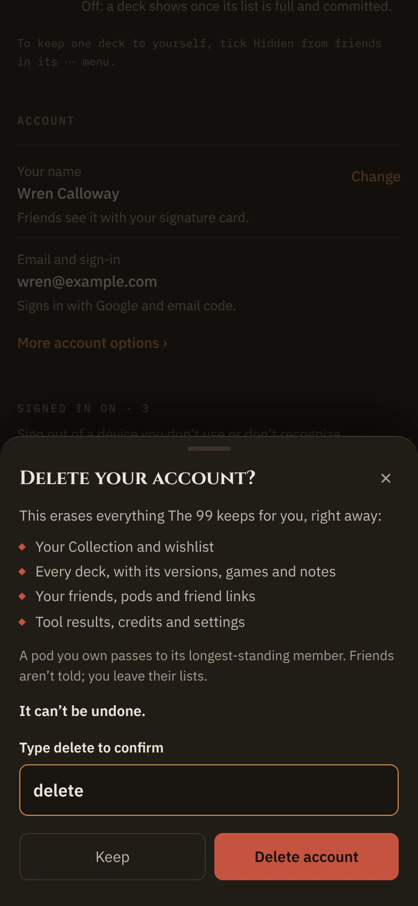
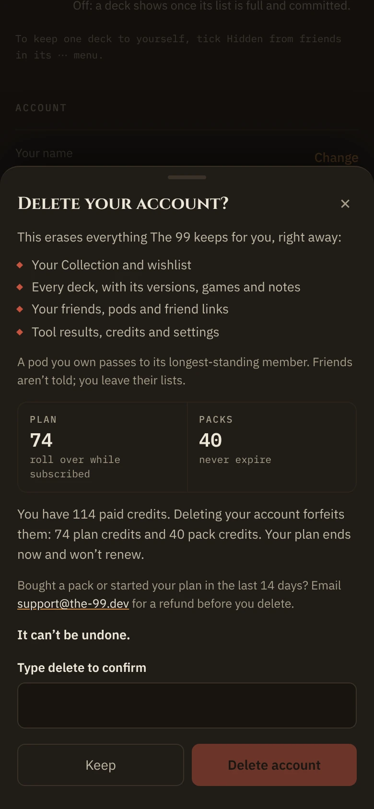
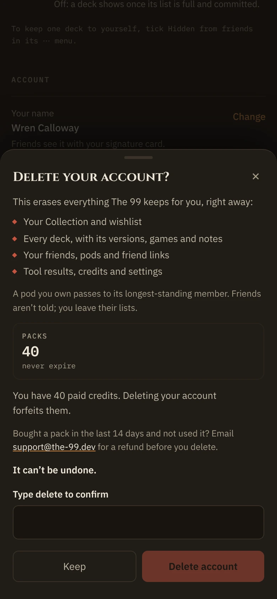
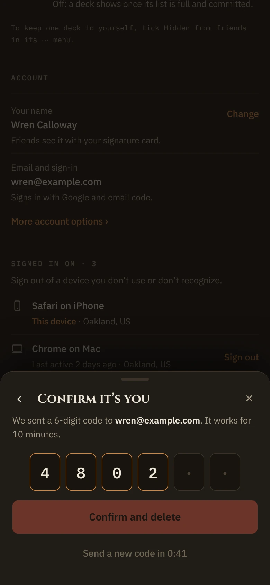
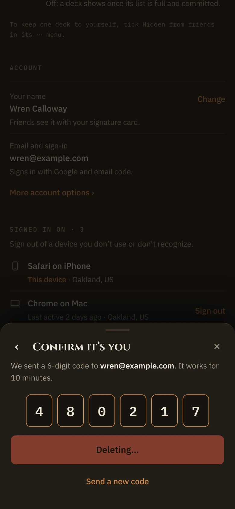
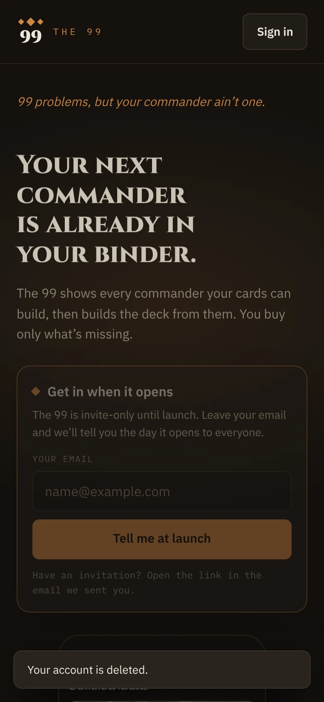
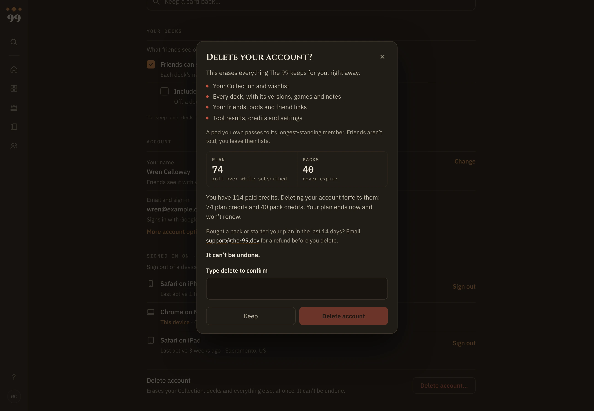
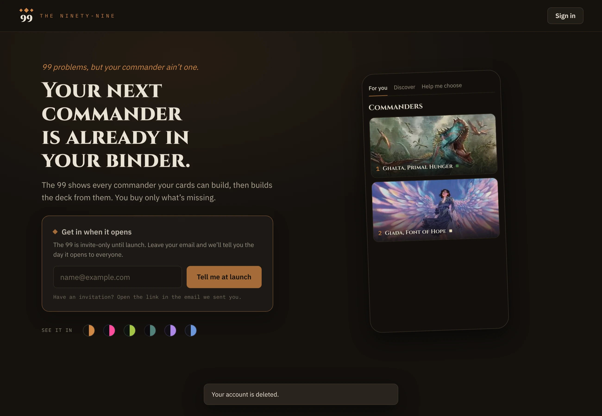

Delete account… opens the modal on D1. Typing delete wakes the danger press. Delete account calls user.delete() through useReverification: inside Clerk's window it runs at once (Deleting… on D1); outside it, D2 asks for the account's factor, then Confirm and delete runs it. Success signs the session out and lands on /.

Four plain lines of what goes, the pods line, then It can't be undone. Delete account sits at .45 until the word is typed.

The word, any case, spaces trimmed. The field is a plain input with autocapitalize and autocorrect off.

The shipped deletion warning's split, moved inside the flow, then You have 114 paid credits. Deleting your account forfeits them: 74 plan credits and 40 pack credits. Your plan ends now and won't renew. and the refund line, widened to a plan's first month. DRAFT

Only what is held is drawn (D2 of buying credits). No plan line, and the shipped refund line as it is.

Outside Clerk's window: Confirm it's you, with ‹ back to D1. More on the next board.

Deleting… on the press; ‹ and ✕ stay but the field is held. Inside the window the same busy press shows on D1.

Clerk's delete ends the session; the app does a full load of /?deleted=1, the shipped toast says Your account is deleted. DRAFT and the param leaves the address bar (mirrorUrl). The toast sits 16px off the foot (no tab bar here).

The 440 dialog at 10% from the top, as SocialModal draws every modal.

The landing's hero with the toast centred at the foot.
What D1 says, and why
del.says ("Nothing else in Manage account touches them"): the warning now lives in the delete itself.